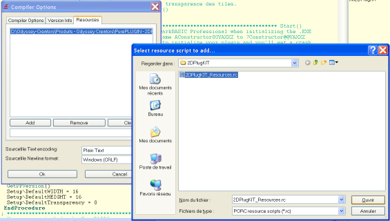
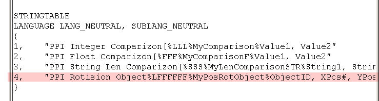
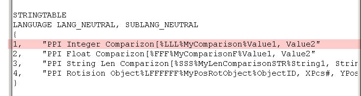

String Table edition
DarkBASIC Professional need a specific structure use to create your String
Table.
Now, with PureBASIC 4, you can directly include .RC string table files from
the PureBASIC compiler options.
.RC string table files are simply ASCII text files. They can be opened with
any text editor that can save as .TXT ascii

You can then edit your resource file directly from WORDPAD or NOTEPAD
it makes String Table editing easier and PlugIN development faster.
(no more need to add manually new string table using Resource Hacker)
The only differency between editing your String table with NotePad/WordPad
and editing it with Resource hacker is that,
editing them under NotePad/WordPad allow you to put all string table in 1
files.
More to this, you'll have to remove the line LANGUAGE LANG_NEUTRAL, SUBLANG_NEUTRAL
It's now an useless line for PureBASIC compiler.
I. Add a new command in the String Table :

As shown in the picture above, the red-highlighted part show a new DarkBASIC
Professional command created in your TPC Plugin.
Here is how it work:
Command Name + % + Parameters +
% + DLL Procedure + % + Parameters
Informations
Each % is essential as it permit to separate each component of the string
table command.
Command Name :
It can be everything except reserved DarkBASIC Professional words and must
not contain special characters.
Parameters :
All parameters needed by the new commands are here in the order from left
to right.
You can use letters : L to specify an integer, F to specify a float number,
S to specify a string.
DLL Procedure :
It's the name of the ProcedureCDLL inside the PureBASIC, PurePLUGIN's DLL.
Informations :
Are not needed but they can give an additional information about what needed
parameters are.
Additional note about Commands:
If your command does not need any parameters, simply put a 0 where you may
add parameters.
The 0 mean that the command need no parameters.
II. Add a new function in the string table :

As shown in the picture above, the red-highlighted part show a new DarkBASIC
Professional function created in your TPC Plugin.
Here is how it work:
Function Name + [% + Return value + Parameters
+ % + DLL Procedure
+ % + Parameters Informations
Each % is essential as it permit to separate each component of the string
table command.
The [ character mean that it's a function and not a command. The differency
between commands and function is that functions always return a value.
Function Name :
It can be everything except reserved DarkBASIC Professional words and must
not contain special characters.
Return Value + Parameters :
All parameters needed by the new commands are here in the order from left
to right.
You can use letters : L to specify an integer, F to specify a float number,
S to specify a string.
The first character on the left is the return value type(it can also be an
integer, a float or a string).
DLL Procedure :
It's the name of the ProcedureCDLL inside the PureBASIC, PurePLUGIN's DLL.
Informations :
Are not needed but they can give an additional information about what needed
parameters are.